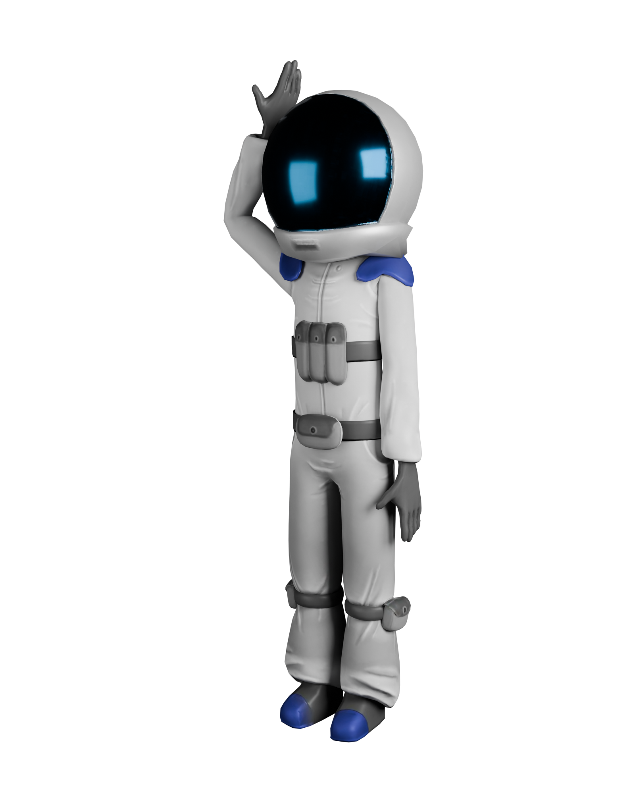
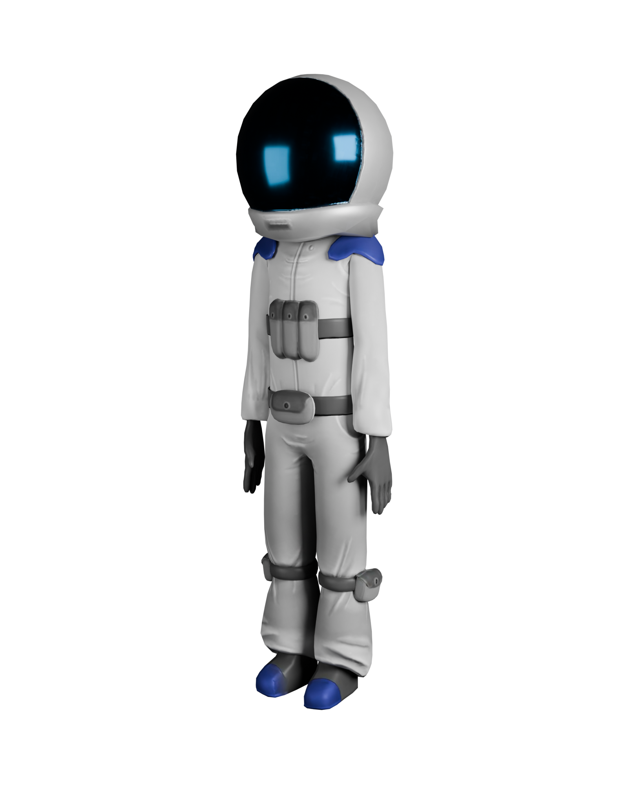
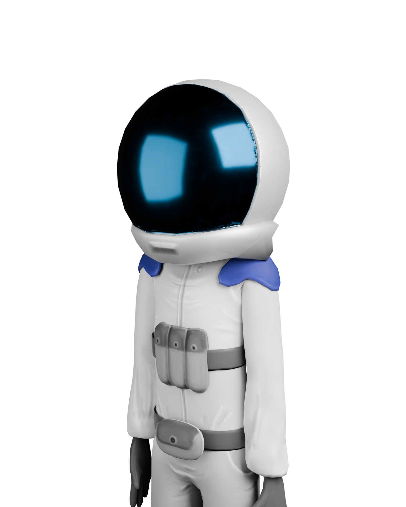

Garvit asked me to keep this brief.

your pick goes to PostHog.

Noted. This changes nothing. It never does.
I'm Garvit. I write PRDs on GitHub, deploy prototypes on weekends, and build dashboards before asking engineering.

FEATURE FLAGS · 3/4 LIVE
GAR-101 · PRODUCT
Stay Portal
Five apartments, flexible bookings, and no more spreadsheet collisions.
Noted. This changes nothing. It never does.
I'm Garvit. I write PRDs on GitHub, deploy prototypes on weekends, and build dashboards before asking engineering.
FEATURE FLAGS · 3/4 LIVE
GAR-101 · PRODUCT
Stay Portal
Five apartments, flexible bookings, and no more spreadsheet collisions.
Left: computed live from what you actually did on this page — no page reload, no server round-trip. Right: an authored reference, not a measurement of anyone real.
| Stage | Status |
|---|---|
| Landed | Reached |
| Scrolled | Reached |
| Played | Reached |
| Read work | In progress |
| Contact | Not yet |
this funnel is computed in your browser. PostHog sees the rest. I check it obsessively.